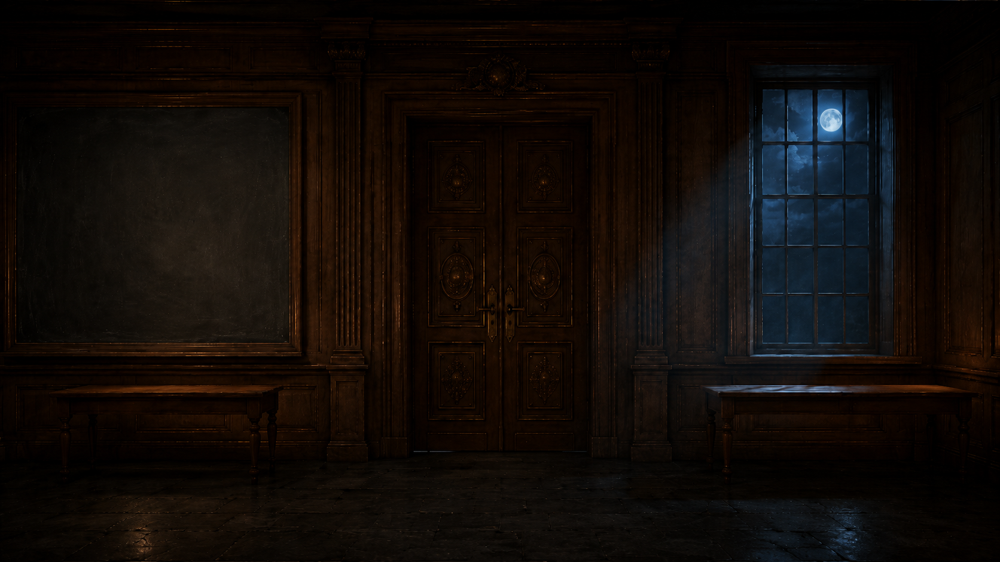
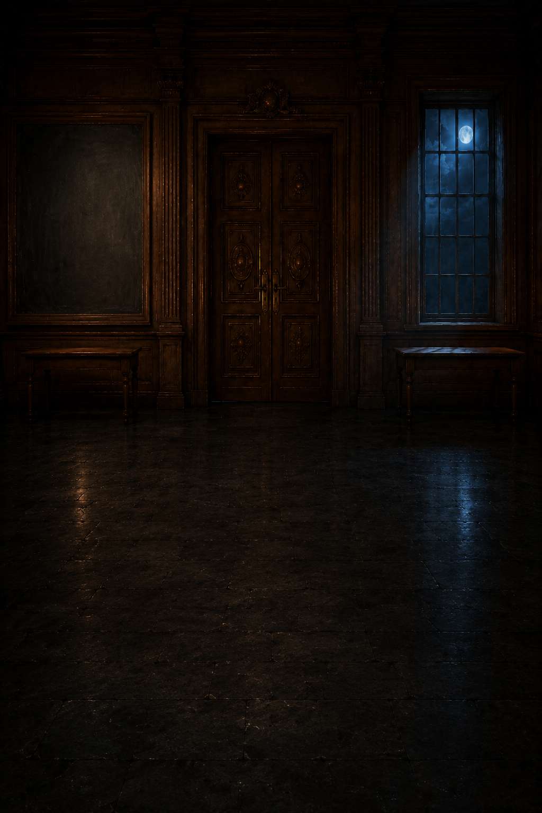
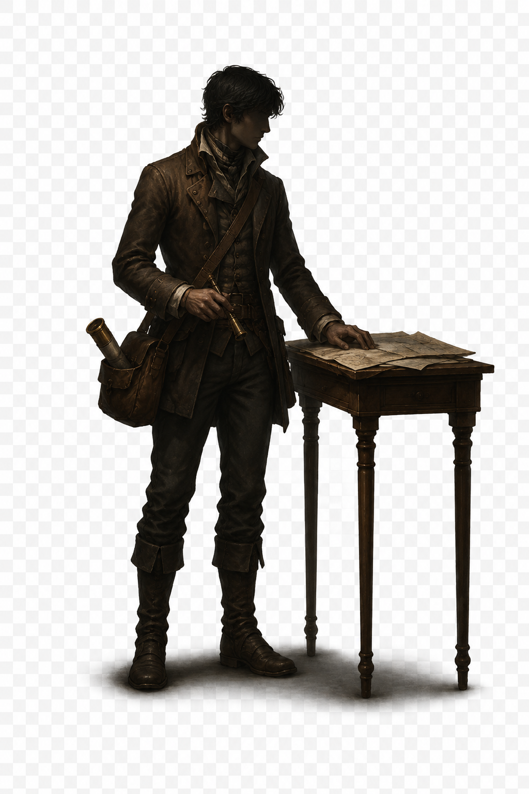

1 · Plate A Desktop (1672×941) — Tür geschlossen
2 · Plate B Desktop — Tür offen

3 · Plate A Mobil (1024×1536) — Tür geschlossen
4 · Plate B Mobil — Tür offen

5 · Scout-Cutout (1024×1536) — Befund: weißer Grund, kein Alpha
6 · Warden-Cutout — Befund: weißer Grund, kein Alpha